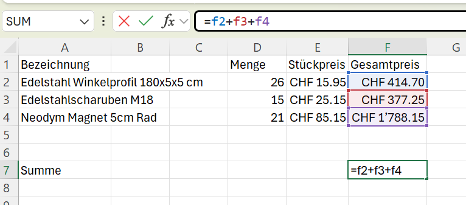
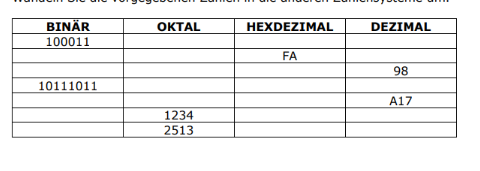

Excel

Das Bild zeigt ein Excel-Arbeitsblatt, das eine einfache Tabelle zur Kalkulation von Preisen enthält. Man sieht dort eine Auflistung von Artikeln, deren Stückpreise und die daraus berechneten Gesamtpreise. In der Zelle F7 wird eine grundlegende Formel (=f2+f3+f4) verwendet, um die Summe der Gesamtpreise zu ermitteln, was ein typisches Beispiel für eine Berechnung in Excel ist. Excel selbst ist ein Tabellenkalkulationsprogramm, das in Zellen, Spalten und Zeilen organisiert ist und vor allem für die Eingabe, Organisation, Analyse und Visualisierung von Daten sowie für das Durchführen von Berechnungen genutzt wird.
Tabellenkalkulation und Datenorganisation
Excel ist ein Programm zur Tabellenkalkulation, dass die Eingabe und Verwaltung von Daten in einem Gitterformat aus Zeilen und Spalten ermöglicht. Jede einzelne Zelle in diesem Gitter hat eine eindeutige Adresse, wie zum Beispiel A1 oder B3. Diese Struktur macht es einfach, grosse Mengen an Informationen zu organisieren und zu sortieren, von einfachen Listen bis hin zu komplexen Datensätzen.
Formeln und Analyse
Eine der wichtigsten Funktionen von Excel ist die Möglichkeit, Formeln und Funktionen zu verwenden, um Berechnungen durchzuführen. Sie können damit Daten analysieren und automatisch Ergebnisse berechnen, ohne jede Zahl von Hand addieren zu müssen. Dies macht Excel zu einem leistungsstarken Werkzeug für die Datenanalyse, Finanzplanung und das Erstellen von Diagrammen, um Trends und Muster in den Daten sichtbar zu machen.
Fazit
Ein Fazit Excel ist ein vielseitiges Programm, das hauptsächlich für die Arbeit mit Zellen, Zeilen und Spalten verwendet wird. Es ist ideal, um große Datenmengen zu organisieren und zu analysieren, indem man Formeln und Funktionen nutzt, um automatische Berechnungen durchzuführen. Es ermöglicht auch die Visualisierung von Daten in Diagrammen und Grafiken. Kurz gesagt, es ist ein mächtiges Werkzeug für alle, die mit Zahlen und Daten arbeiten.
Aussagekräftiger Haupttitel zweites Wochenthema Lerndokumentation

Das Bild zeigt eine Mathe-Aufgabe, bei der Zahlen von einem Zahlensystem in ein anderes umgewandelt werden müssen. In einer Tabelle sind vier verschiedene Zahlensysteme aufgeführt: Binär (Basis 2), Oktal (Basis 8), Hexadezimal (Basis 16) und Dezimal (Basis 10). In jeder Zeile ist eine Zahl bereits gegeben, und der Benutzer muss diese in die jeweils anderen Systeme umrechnen, um die leeren Felder auszufüllen.
Binäres und Dezimales Zahlensystem
Das Binärsystem und das Dezimalsystem sind zwei grundlegende Arten, Zahlen darzustellen. Das Dezimalsystem, das wir im Alltag verwenden, basiert auf der Zahl 10 und nutzt zehn verschiedene Ziffern (0 bis 9). Das Binärsystem hingegen basiert auf der Zahl 2 und kennt nur zwei Ziffern (0 und 1). Es ist die Sprache der Computer, da elektrische Schaltkreise leicht zwischen den Zuständen "ein" und "aus" (dargestellt als 1 und 0) unterscheiden können.
Oktalsystem Hexadezimalsystem
Das Oktalsystem und das Hexadezimalsystem sind beides Zahlensysteme, die in der Informatik verwendet werden, um lange Binärzahlen kürzer und lesbarer darzustellen.
Das Oktalsystem hat die Basis 8 und verwendet die Ziffern von 0 bis 7. Jede Ziffer im Oktalsystem entspricht genau drei Ziffern im Binärsystem.
Das Hexadezimalsystem hat die Basis 16 und benutzt die Ziffern von 0 bis 9 und die Buchstaben A bis F. Jede Ziffer im Hexadezimalsystem steht für vier Binärziffern.
Beide Systeme vereinfachen die Arbeit mit binären Daten, indem sie die Umrechnung erleichtern.
Fazit
Zusammenfassend lassen sich die vier Zahlensysteme wie folgt beschreiben: Das Binärsystem und das Dezimalsystem stellen die grundlegenden Gegensätze dar – Computer nutzen die binären Ziffern 0 und 1, während wir Menschen im Alltag das Dezimalsystem mit seinen zehn Ziffern verwenden. Das Oktalsystem und das Hexadezimalsystem dienen in der Informatik als praktische Zwischenschritte. Sie erleichtern die Arbeit, indem sie lange Binärzahlen in eine kompaktere und leichter lesbare Form übersetzen.